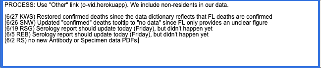
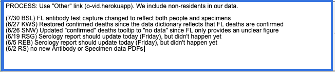
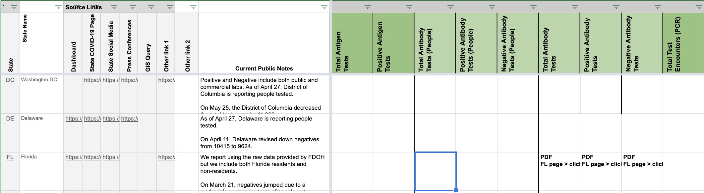
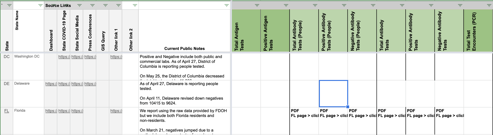
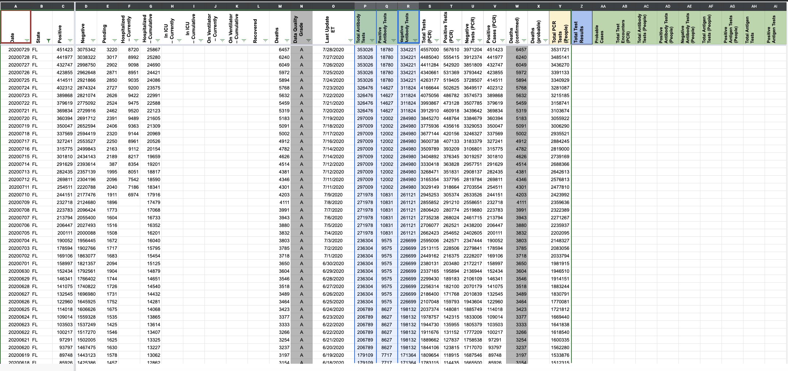
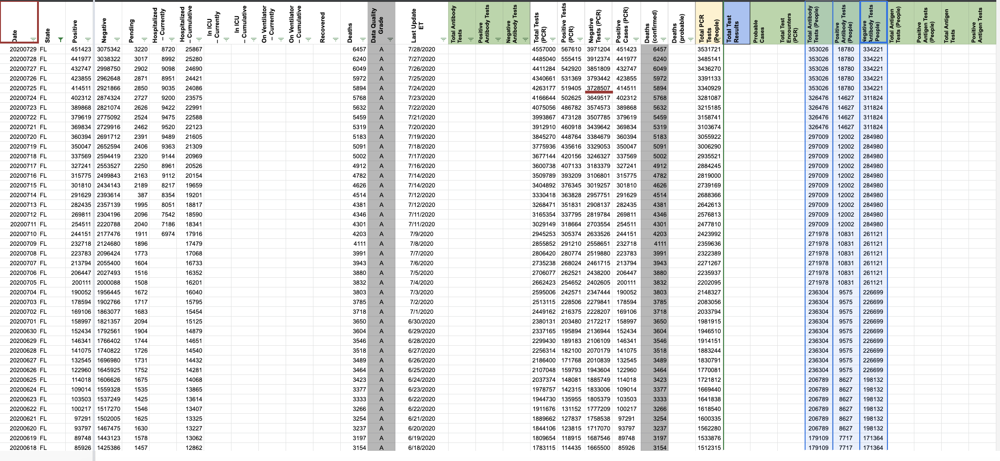

[FL] Antibody test reporting in people
Issue number 699
brianskli opened this issue on July 30, 2020 at 6:30 am
State or US: Florida
Describe the problem It was found that our antibody test numbers from FL refer to people, not specimens. The numbers will need to be copied from the tests columns in States Daily to people columns.
Link to data source https://floridahealthcovid19.gov/?track_covid19
brianskli added the label Historical Data on July 30, 2020 at 6:30 am
brianskli added the label PCL/SVP Historicals on July 30, 2020 at 6:30 am
brianskli closed the issue on July 30, 2020 at 6:36 am
Our need to transfer to people antibody reporting was verified.
Action items:
1/4: WS2 private note left Before:  After: 
2/4: WS2 source notes changed Before:  After: 
3/4: Data in States Daily copied to correct columns Before:  After: 
4/4: WS2 pre-filled